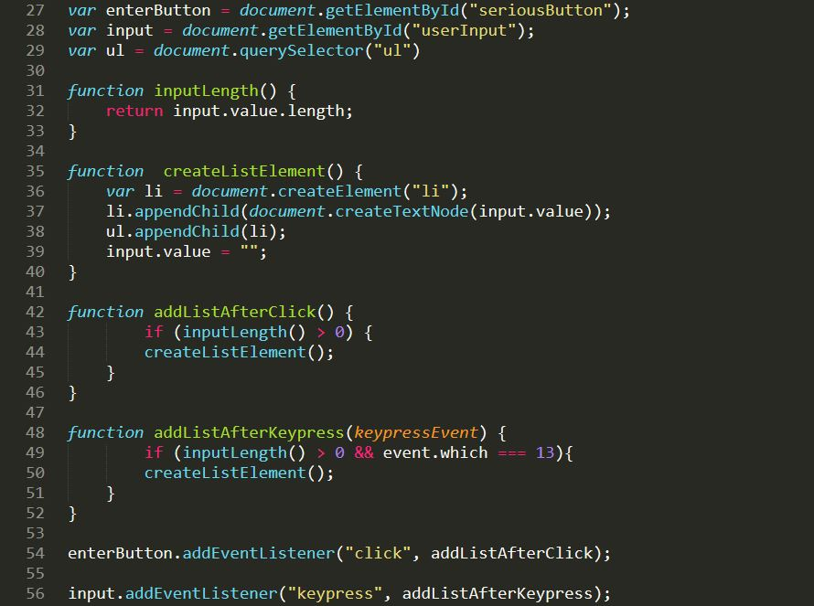
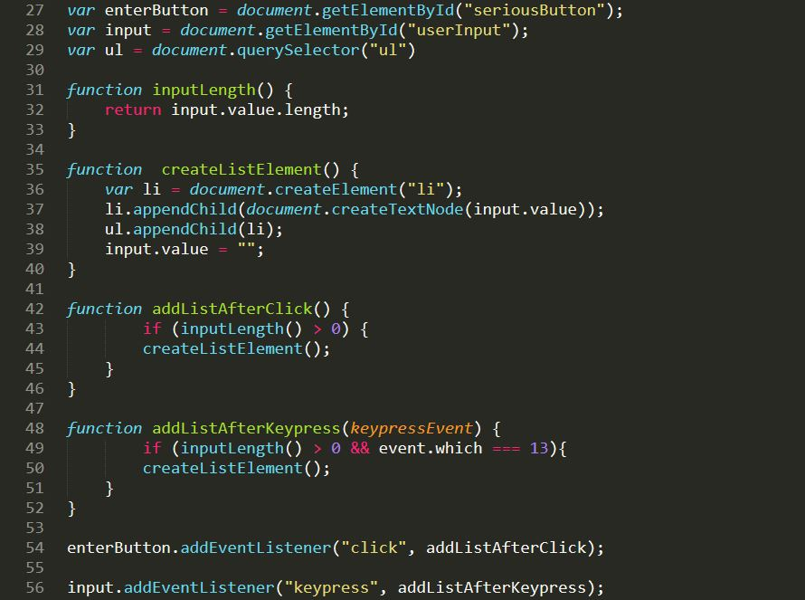

JavaScript and its relationship to HTML and CSS.
Why is Javascript is so important to implement in a website?.
Because it is an essential tool for a user-friendly experience for those who are browsing your website. By applying Javascript to your website you are not only impressing the customers by having these cool widgets, like a dropdown box or a pop up that compliments the user, but makes it easier to navigate without having any problems if set up properly.
Javascript can sort of be summed up as the engine modification on a car, the styling of the car can be the CSS and the car can be described as the HTML. to make your website as smooth and UI friendly as possible I recommend using Javascript on every website.

Control flow and loops, arrays and objects.
Control Flow;
Control flow is the way your Javascript is set up/coded, an example would be changing the way of how a program works.
this image shows a diagram of 2 different paths, the user must type in their age and if it above 18 they are able to go into the website but if they aren't over the age of 18, they are redirected to another page, since it is not available for them. this is one of the many things control flow is capable of, managing over your codes making sure it flows smooth without any bugs. I would describe it as in if you were to try to get into a club but if you are too young the bouncer would say no and you weren't allowed in but if you were above the age requirement you would be able to go in.
Loops;
There are different types of loops, a Do-While-Loop, a While-Loop, a For-Loop and much more. When using the Javascript loop feature this will make sure to repeatedly run the block of code you created until a change/certain criteria has come/been met. a good way to think of Loops would be when shooting a gun, and after a while you have to reload and basically continuosly repeating that process untill you either run out of bullets or magezines, the gun is looping the bullets until a certain requirement is met A.K.A running out of bullets.
Arrays vs Objects;
we use arrays for when we want/need to make and store a bunch of items/strings within a single variable this could vary from cars, a list, different data types(numbers, booleans, objects, strings, different arrays). while the objects feature is meant to be served as something in your code, this can be anything you want it be.
The importance of Function.
Having different functions for me is super important because it makes your browser take up less memory space, it looks super neat and tidy than having a bunch of random codes everywhere and its just allround very efficient.
 

These 2 images basically do the same thing but are structured diffferently, I'll see if you can figure out which one is much more easier to comprehend and what they both do.
DOM and DevTools.
What is DOM?;
The DOM is the Document Object Model which is a programming interface for HTML and/or XML Documents. the Website itself is a document which is displayed either inside your browser or an HTML source, this is so that the DOM is able show the website with each and different components. With this you are able to change different attributes within the current viewing website and mess around with it, but since it is not the original if you were to refresh the page, everything would be changed to normal since the website is getting the content from it's original source.
What is the DevTools;
The DevTools is an already built in tool in Google Chrome that allows you to edit the current viewing pages and more. this sort of relates with the DOM. basically the code in the DevTools is the DOM, so by using the DevTools you are able to manipulate the DOM and change various attributes that reside in the DOM. with the different tools that the DevTools has you are able to check the speed your website takes to load, which I find amazing that you can do all of this.